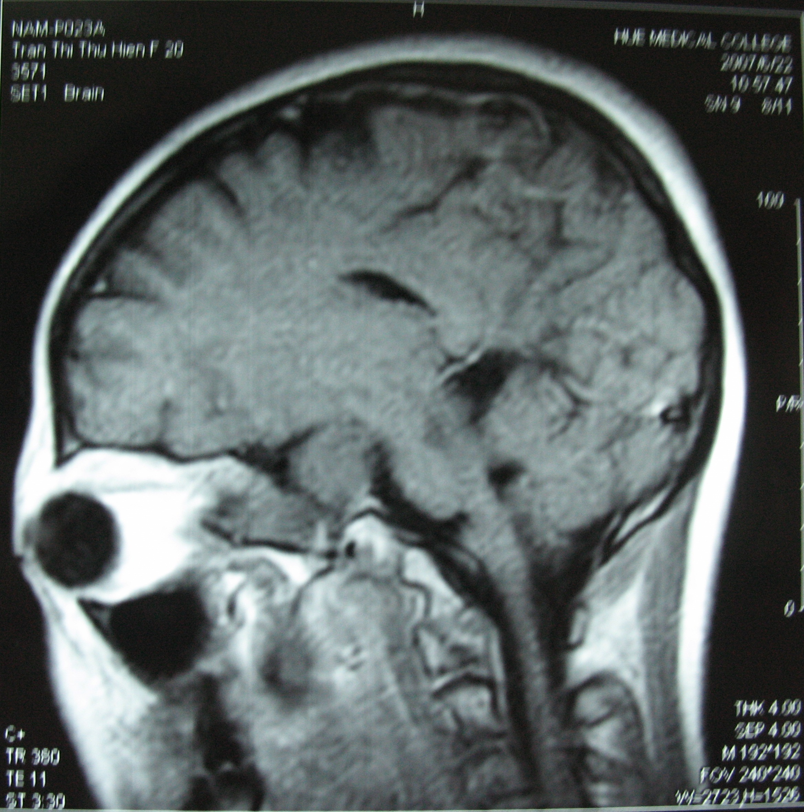
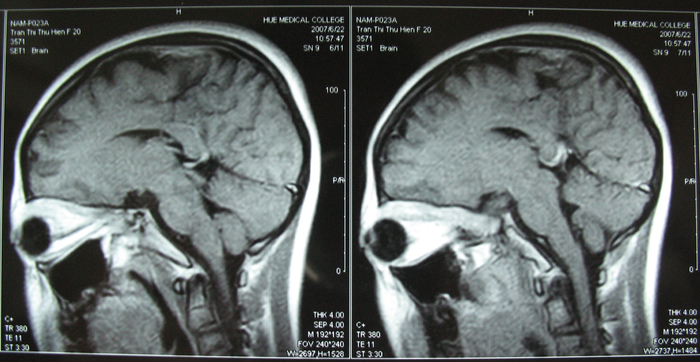
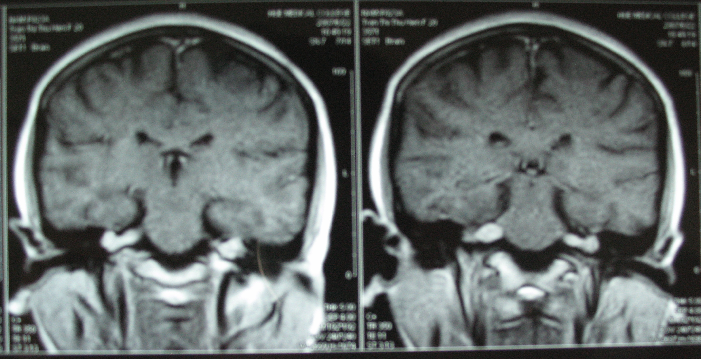

Magnetic resonance imaging
* Định nghĩa:
+ Viết tắt: MRI
+ Ghi hình bằng cộng hưởng từ
+ Một phương pháp chẩn đoán hình ảnh từng phần cơ thể thuận lợi cho chẩn đoán và điều trị. Không giống như những phương tiện chẩn đoán hình ảnh khác, kỹ thuật này không gây phơi nhiễm tia xạ ion hóa cho bệnh nhân. MRI cung cấp hình ảnh có độ tương phản tốt hơn CT scan.


Hình: Các lát cắt của chụp MRI